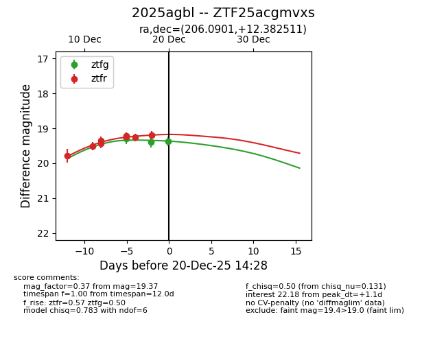
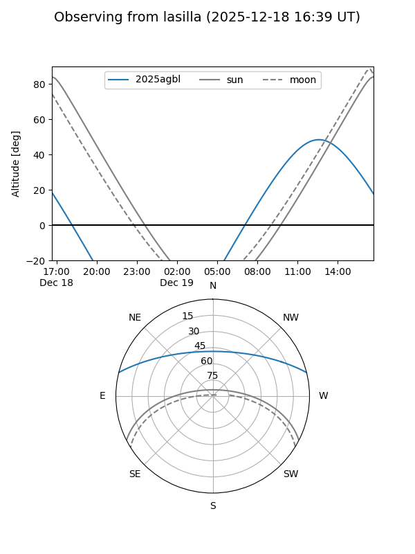
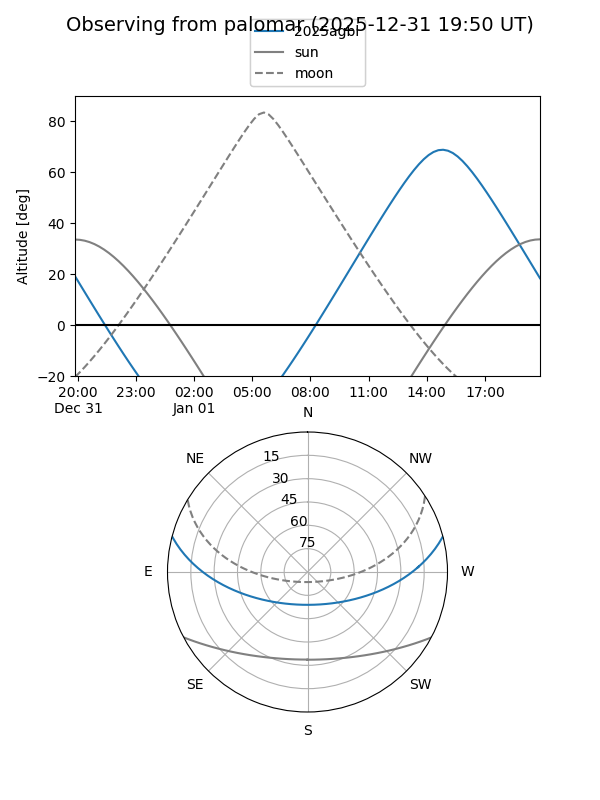

2025agbl
Target 2025agbl at 2025-12-31 16:59
Aliases and brokers:
FINK:
Lasair:
ALeRCE:
TNS:
YSE:
alt names
ZTF25acgmvxs (ztf,fink_ztf)
2025agbl (tns,yse)
Coordinates:
equatorial (ra, dec) = 206.0901,+12.38251
equatorial (HMS+DMS) = 13:44:21.63,+12:22:57.04
galactic (l, b) = (345.5787,+70.73298)
Flags:
Photometry:
last ztfg=19.44, ztfr=19.19
4 ztfg, 11 ztfr detections
Lightcurve

Visibility


Additional plots